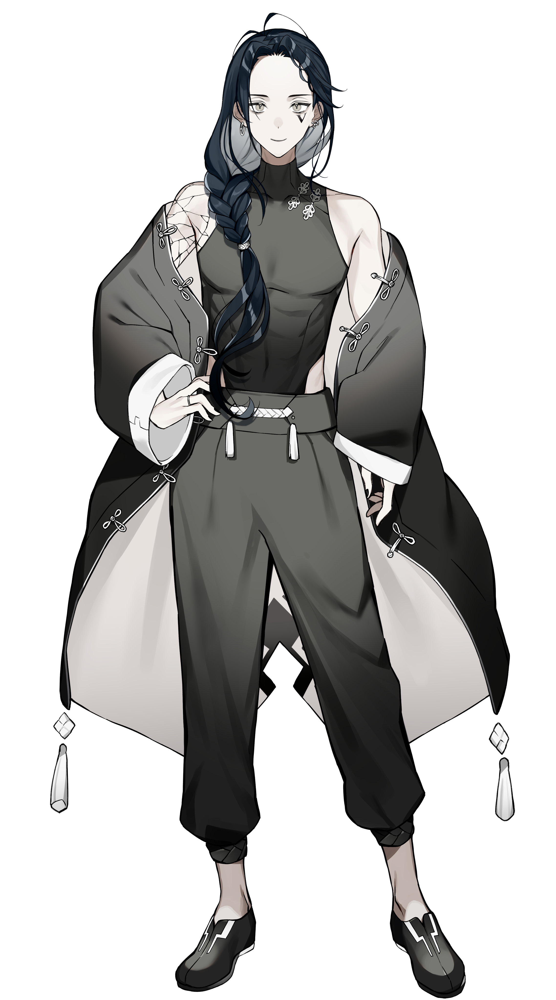

STREAMER MEDIA KIT
武威
VJPVTVALORANT / TWITCH STREAMER
くだらないことでも全力で拾って笑いに変える、エンタメ重視の配信スタイル。
VALORANTのゲームプレイを中心に、リスナーと一緒に熱量高く楽しめる空間をお届けしています。
VALORANTのゲームプレイを中心に、リスナーと一緒に熱量高く楽しめる空間をお届けしています。

概要 ABOUT ME
初配信日：2021年9月25日
Twitchを中心に活動しているストリーマーの「武威（ぶい）」です。気取らず、リアルで面白い空間を作ることをモットーに日々配信を行っています。
// FAVORITES & INTERESTS
OFFICIAL CONTACT
案件のご依頼、コラボ等のお問い合わせはメールまたはX(Twitter)のDMより受け付けております。
実績 METRICS
// 1. SNS OVERVIEW
TWITCH
FOLLOWERS
取得中...
フォロワー数
X (TWITTER)
FOLLOWERS
取得中...
フォロワー数
YOUTUBE
SUBSCRIBERS
取得中...
チャンネル登録者数
// 2. TWITCH DATA (STREAM PERFORMANCE)
AVG VIEWERS
取得中...
平均同時視聴者数
MAX VIEWERS
取得中...
最高同時視聴者数
UNIQUE AVG
取得中...
月間平均ユニーク視聴者
VIEWER TRENDS (HISTORY)
// 3. YOUTUBE DATA (ANALYTICS & POPULAR VIDEOS)
TOTAL VIEWS
取得中...
チャンネル総再生数
GENDER RATIO (男女比)
男性: 93.6%
女性: 6.4%
YouTube Studio アナリティクス
AGE GROUPS (年齢層)
Core Target: 25–34歳 (45.5%)
Sub Target: 18–24歳 (32.8%)
コア層：20〜30代中心
FEATURED VIDEOS (人気動画トップ3 / 自動更新)
経歴 HISTORY & PARTNERSHIP
OFFICIAL CREATOR
Mecha BREAK 公式クリエイター就任
2021.09.25
配信活動開始
// PARTNERSHIP OPPORTUNITIES
長期的なパートナーシップ様を募集しております
長期スポンサー契約、ブランドアンバサダー、継続的なPR施策、製品提供、イベント・大会へのご招待など、お仕事のご相談はメールまたはXのDMよりお気軽にご連絡ください。